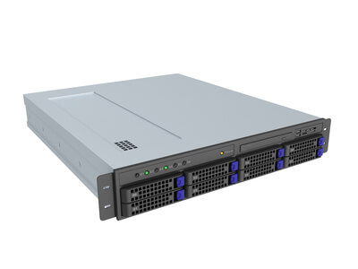

| Ordenador | Tipo | Descripción |
| uno | Portatil | Se han hecho muy populares por la capacidad que tenemos para transportarlos de un sitio a otro sin ningún problema. |
| uno | ||
|  | Servidor | este dispositivo va a ofrecer servicios para que otros ordenadores funcionen correctamente, siempre basándose en una red local o en su defecto en Internet. Los servidores cuentan con un almacenamiento de memoria de mayor tamaño, múltiples discos duros y además ofrecen una alta potencia debido a sus avanzados procesadores |
| uno | ||
| uno | PDA | Aunque cada vez menos utilizada debido a la expansión de los tablets, las PDA siguen teniendo fama |
| uno | ||